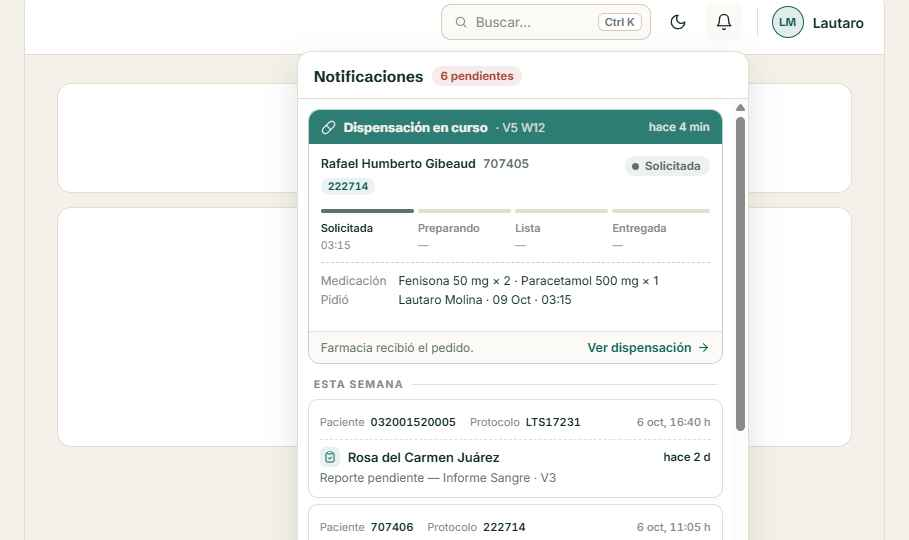
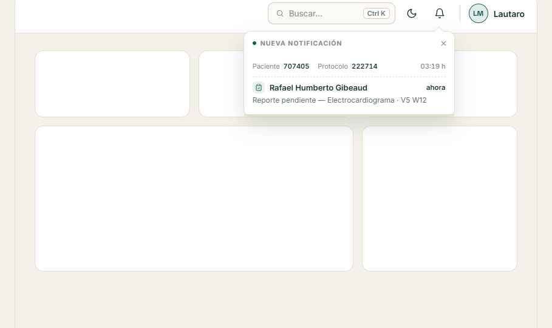
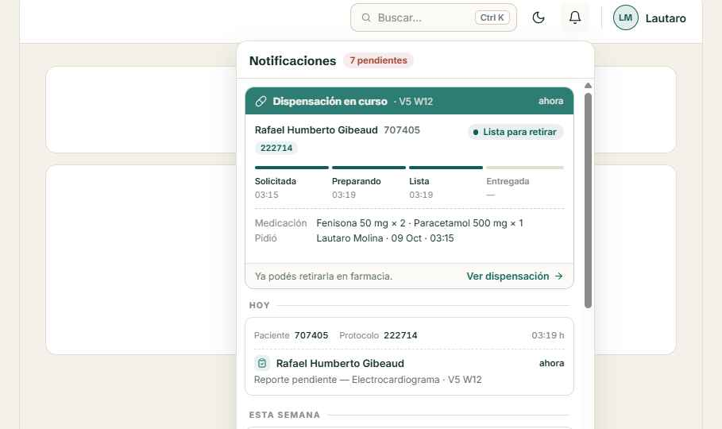
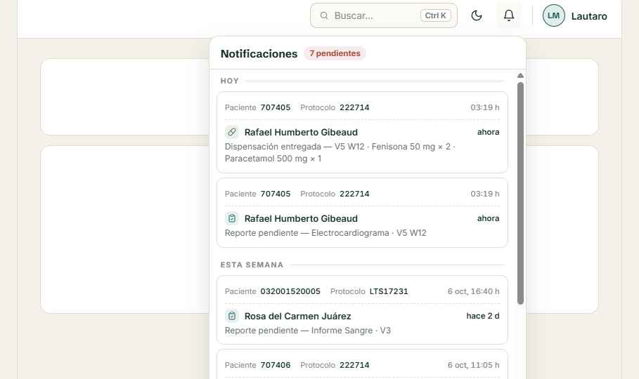

Medidas, colores y estados de la tarjeta de notificación (variante C5 con ícono junto al nombre), la alerta que sale de la campana y el panel. Los números naranjas remiten a la leyenda de cada bloque. Valores en px a tamaño real; los dibujos están ampliados ×1,5.
#A6483B, fuera de la tarjeta (left −6px), centrado vertical. Fondo con tinte rgba(15,95,87,.035) sobre blanco.#E4DECF, radio 10px, padding 11px, una sola columna. Separación entre tarjetas 6px.#838C89 400; valor en #14302E 600, margen izq. 3px, cifras tabulares. Gap 14px.#838C89, alineada a la derecha, alto mínimo 22px. En hover se oculta y en su lugar aparece el botón Descartar (ver 03).#E4DECF. Padding inferior 6px, margen inferior 7px.#14302E. Una línea, recorta con «…». Ocupa todo el ancho libre. Gap 8px con ícono y tiempo.#14302E, sin corte de línea.#61706C, interlineado 1.4, margen sup. 3px, máximo 2 líneas con «…».| Ícono | Tipo | Trazo | Fondo | Ejemplo de motivo |
|---|---|---|---|---|
| Reporte pendiente | #0F5F57 | rgba(15,95,87,.09) | Reporte pendiente — Informe Sangre · V3 | |
| Ventana vencida | #A6483B | rgba(166,72,59,.09) | V4 W8 — Ventana vencida el 03 Oct 2026 | |
| Pendiente vencido | #8C6520 | rgba(140,101,32,.10) | Retest de V3 W4 — Pendiente vencido | |
| Dispensación | #4A7248 | rgba(74,114,72,.11) | Dispensación entregada — V5 W12 · Fenisona 50 mg × 2 |
Íconos: set Lucide (clipboard-check, alert-circle, clock, pill), 24×24, trazo redondeado. Usar el set de íconos que ya tenga la app si es equivalente.
Fondo blanco, borde #E4DECF.
Punto rojo a la izquierda y tinte verde 3,5 %. Pasa a leída 2,5 s después de abrir el panel o con «Marcar como leídas».
Borde #D8CBB0, fondo #FBFAF6, sombra 0 1px 2px rgba(20,48,46,.06), 140 ms. La hora se desvanece (120 ms) y aparece Descartar: círculo 24px, ícono 14px. Reposo #838C89; hover sobre el botón fondo rgba(166,72,59,.12) e ícono #A6483B (mostrado). Abre el flujo de descarte con motivo.
| Antigüedad | Tiempo relativo (8) | Hora exacta (4) |
|---|---|---|
| < 1 min | ahora | 16:40 h |
| < 60 min | hace 12 min | 16:28 h |
| < 24 h | hace 5 h | 11:05 h |
| Ayer | hace 1 d | 08:00 h |
| Anterior a ayer | hace 6 d | 3 oct, 08:00 h |
Encabezado de grupo: Inter 10.5px 700, mayúsculas, tracking .12em, #838C89, línea 1px #E4DECF hasta el borde. Queda fijo arriba al hacer scroll (fondo blanco 96 % + blur 4px). Dentro de cada grupo, de la más reciente a la más antigua. Hoy/Ayer muestran solo la hora porque el día ya lo dice el grupo. «Esta semana» = 2 a 6 días.
#E4DECF, radio 12px, sombra 0 14px 34px rgba(20,48,46,.14). Pico de 11px rotado 45° apuntando a la campana.#838C89. Punto 6px del color del tipo/estado. Padding 8px 8px 0 14px.#838C89; hover fondo #FBFAF6, ícono #14302E.#E4DECF, relleno del color del tipo, se vacía de derecha a izquierda en 6000 ms lineal. Se pausa con hover. Al terminar, la alerta se cierra.| Movimiento | Propiedades | Duración | Curva |
|---|---|---|---|
| Entrada (sale de la campana) | scale .2 → 1, opacity 0 → 1, origen en la campana | 320 ms / 220 ms | cubic-bezier(.2,.9,.3,1.15) / ease |
| Salida (vuelve a la campana) | scale 1 → .2, opacity 1 → 0 | 300 ms / 250 ms (+50 ms) | cubic-bezier(.6,0,.8,.4) |
| Retardo antes de entrar | — | 140 ms | — |
| Tarjeta nueva en el listado | translateY −6px → 0, opacity 0 → 1 | 500 ms | cubic-bezier(.2,.8,.3,1) |
| Apertura del panel | scale .96 + translateY −6px → normal, opacity | 190 ms / 160 ms | cubic-bezier(.2,.8,.3,1) |
Con prefers-reduced-motion: solo fundido de opacidad (150 ms), sin escala, sin sacudida ni pulsos. Si el panel ya está abierto no se muestra alerta: la tarjeta entra directo al listado. Una alerta nueva reemplaza a la que esté visible.

Panel 452px, radio 14px. Arriba, la dispensación en curso como tarjeta fija; debajo, el listado agrupado.

Alerta de una notificación nueva con el panel cerrado.

Paso «Lista para retirar», con hora de cada paso, medicación y responsable.

Al entregarse, la tarjeta fija desaparece y queda un registro «Dispensación entregada» en el listado.